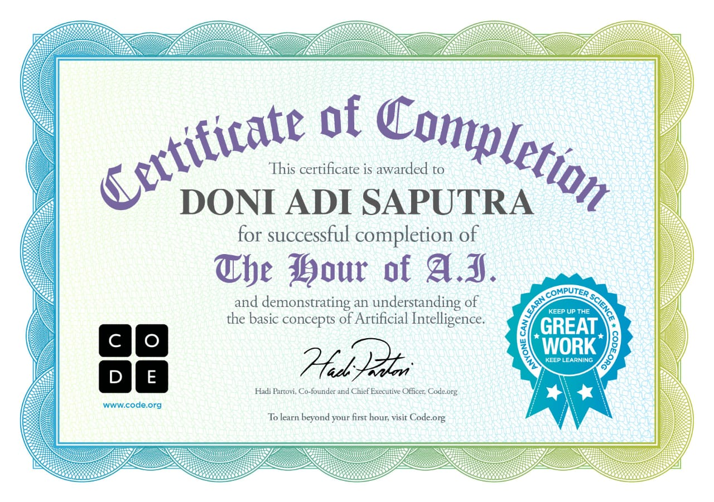

DONI ADI SAPUTRA (00865642767)
(00876376487)
YAYASAN PERSAUDARAAN HAJI AL-MABRUR
SMK AL-MABRUR PEJAWARAN
BANJARNEGARA
2025
Puji dan syukur penulis panjatkan ke hadirat Tuhan Yang Maha Esa karena atas rahmat dan karunia-Nya, penulis dapat menyelesaikan makalah yang berjudul "Negara Jepang" ini dengan baik dan tepat waktu.
Makalah ini disusun sebagai salah satu tugas mata pelajaran di SMK Al-Mabrur Pejawaran, yang bertujuan untuk menambah wawasan serta pemahaman penulis mengenai Negara Jepang, baik dari segi sejarah, budaya, sistem pemerintahan, ekonomi, maupun kehidupan masyarakatnya.
September 2025
Penyusun
Jepang dikenal sebagai salah satu negara maju di Asia Timur yang memiliki pengaruh besar di dunia. Negara yang dijuluki Negeri Sakura ini menempati posisi penting, baik dalam bidang teknologi, ekonomi, maupun kebudayaan.
Berdasarkan catatan sejarah, Jepang berhasil bangkit dari masa feodal menuju era modern melalui Restorasi Meiji pada abad ke-19. Setelah itu, Jepang berkembang pesat dan kini menempati jajaran negara dengan teknologi paling inovatif.
Tidak hanya sektor industri, Jepang juga menjadi sorotan melalui budaya yang mendunia. Anime, makanan khas seperti sushi dan ramen, serta nilai disiplin dan kerja keras masyarakatnya membuat Jepang menjadi contoh bagi banyak negara lain.
Fenomena tersebut menunjukkan bagaimana Jepang mampu memadukan tradisi dengan kemajuan modern. Melalui makalah ini, penulis menyajikan informasi mengenai letak geografis, sejarah, kebudayaan, pendidikan, serta perekonomian Jepang untuk memberikan gambaran menyeluruh tentang negara tersebut.
Jepang adalah negara kepulauan di Asia Timur yang terdiri dari empat pulau utama, yaitu Hokkaido, Honshu, Shikoku, dan Kyushu, serta sekitar 3.000 pulau kecil termasuk Okinawa. Luas wilayahnya mencapai 377 ribu km², dengan 73% berupa pegunungan.
Secara geografis, Jepang berada di timur laut Cina dan Taiwan, di timur Korea, serta di selatan Rusia. Negara ini tidak memiliki perbatasan darat, namun garis pantainya sangat panjang, hampir 30 ribu km.
Zaman Paleolitik: Berlangsung sekitar 100.000 hingga 30.000 SM. Pada masa ini, manusia sudah menggunakan perkakas batu dan mulai menghuni kepulauan Jepang sekitar 35.000 SM.
Zaman Jōmon: Berlangsung dari sekitar 14.000 SM hingga 300 SM. Masyarakat hidup sebagai pemburu-pengumpul dan mulai mengenal pertanian sederhana serta membuat bejana tanah liat berhias pola unik.
Zaman Yayoi: Dari sekitar 400 SM hingga 250 M. Masyarakat mulai bercocok tanam padi dan membuat perkakas dari besi dan perunggu. Catatan Tiongkok menyebut adanya lebih dari 100 suku di Jepang pada masa ini.
1. Geisha: Seniman tradisional Jepang yang ahli dalam menari, menyanyi, musik, dan upacara minum teh. Geisha telah ada sejak abad ke-18 dan masih bertahan hingga kini.
2. Matsuri: Festival budaya yang biasanya diadakan saat musim panas, sebagai bentuk syukur dalam ajaran Shinto dan juga ajang hiburan rakyat.
3. Sadou: Upacara minum teh tradisional Jepang yang berakar dari Zen Buddha dan mengajarkan nilai kehormatan serta ketenangan batin.
Pendidikan di Jepang terdiri dari enam tahun pendidikan dasar dan enam tahun pendidikan menengah, yang dibagi menjadi tiga tahun menengah bawah dan tiga tahun menengah atas. Wajib belajar sembilan tahun mencakup pendidikan dasar dan menengah bawah.
Kegiatan ekstrakurikuler di sekolah Jepang beragam dan membantu siswa mengembangkan bakat serta karakter. Fasilitas sekolah negeri umumnya merata, sedangkan sekolah swasta punya fasilitas tambahan sesuai keunggulannya.
Pada kuartal kedua 2025, ekonomi Jepang tumbuh 0,5% dari kuartal sebelumnya. Pertumbuhan ini didukung konsumsi privat dan ekspor yang meningkat. Industri otomotif, teknologi, dan elektronika masih menjadi andalan utama. Meski menghadapi tantangan demografis dan politik, Jepang tetap stabil berkat inovasi dan kualitas SDM-nya.
Jepang adalah negara kepulauan di Asia Timur dengan budaya unik, sistem pendidikan disiplin, dan ekonomi terbesar ketiga di dunia. Perpaduan antara tradisi dan inovasi membuat Jepang menjadi kekuatan global yang inspiratif.
Makalah ini memberikan gambaran tentang Jepang sebagai kekuatan global. Diharapkan pembaca dapat memahami bagaimana Jepang menghadapi tantangan seperti populasi menua dan perubahan geopolitik dengan tetap mempertahankan nilai tradisi dan inovasi teknologi.
